ЗВІТИ З ЛАБОРАТОРНИХ РОБІТ
З ДИСЦИПЛІНИ "РОЗРОБЛЕННЯ WEB-ЗАСТОСУВАНЬ"
БРИГАДА №3 Студенти групи ІС-01
Дудукчян Каріна, Возняк Софія, Сперкач Анна, Міхненко Анна
|
|
|
|
|


| Лабораторна робота №1 | Лабораторна робота №2 | Лабораторна робота №3 | Лабораторна робота №4 | Лабораторна робота №5 | Лабораторна робота №6 | Лабораторна робота №7 | Лабораторна робота №8 | Лабораторна робота №9 |
| Лабораторна робота №7 | |
|---|---|
|
Тема, Мета Лабораторної роботи №7 Посилання на Github |
8 варіант. Створення БД для Розкладу руху автобусів Опис об'єктів предметної галузі, що будуть в БД Для БД розкладу руху автобусів було створено дві таблиці: ✧cSchedule ✧cCar НАЛАШТУВАННЯ OPENSERVER: Обираємо мову та завантажуємо застосунок Вікно застосунку, натискаємо "Далі" 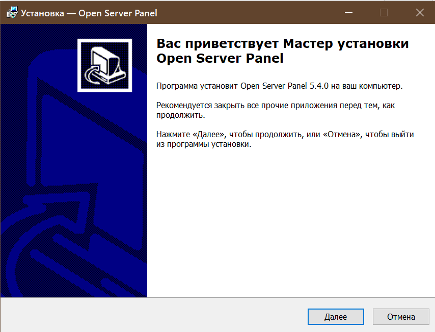 Обираємо папку встановлення 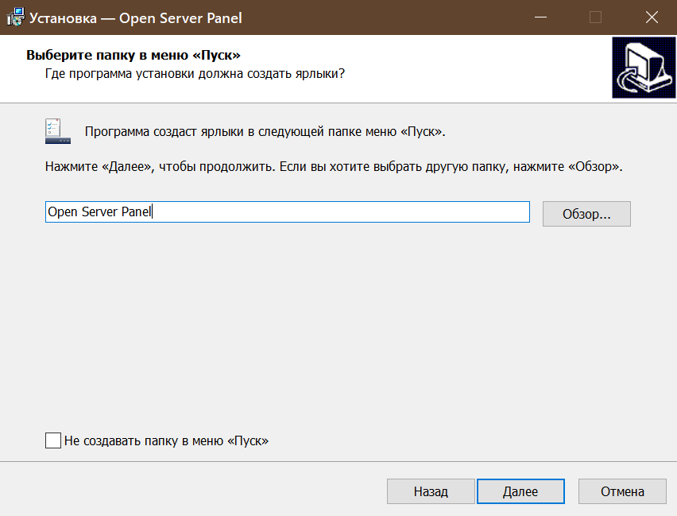 Обираємо ті пакети застосувань, які знадобляться у даній лабораторній роботі 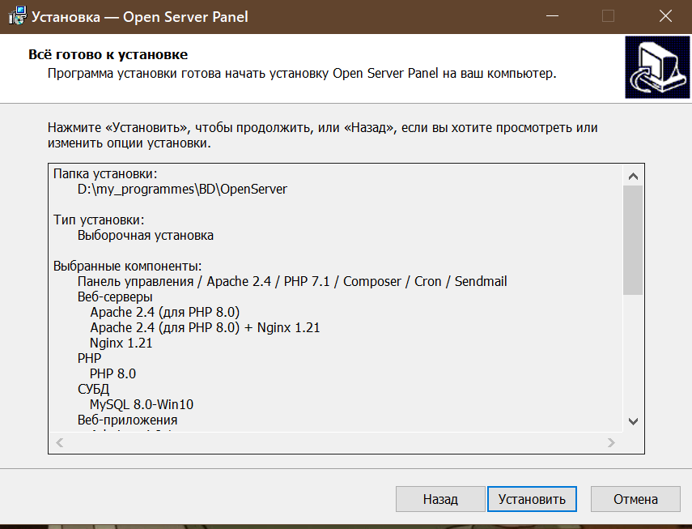 При правильному завантаженні, натискаючи на /localhost, бачимо, що сервер справно працює Створюємо новий домен-адресу, на якому буде розміщуватись наш сайт phpMyAdmin 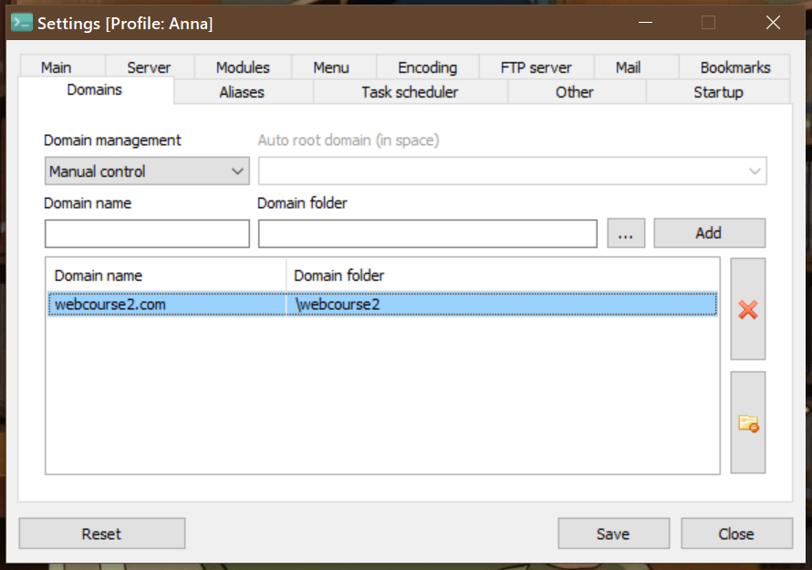 Детальна схема, як знайти застосунок PhpMyAdmin
Інфологічна та Датологічна моделі. Опис моделі Створюємо Базу Даних для Розкладу Руху Автобусів 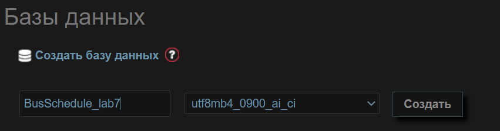 Створюємо дві таблиці: таблицю cCar та cSchedule, вказавши кількість стовбців та типи даних Створення cCar: 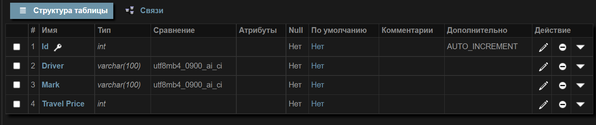 Створення cSchedule: 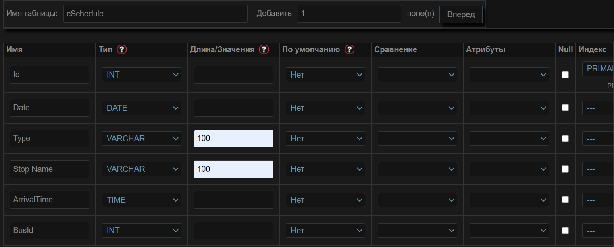 Реалізація БД в СУБД MySQL. phpMyAdmin Заповнимо таблиці нашими даними, для цього використовуємо "INSERT INTO" Заповнення 1 таблиці 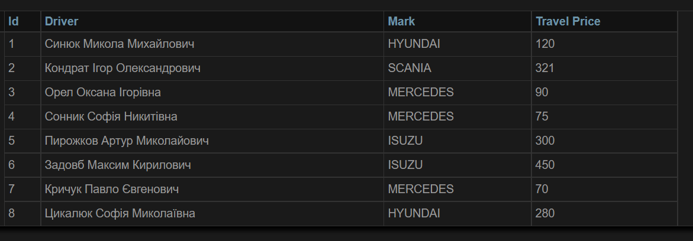 Заповнення 2 таблиці 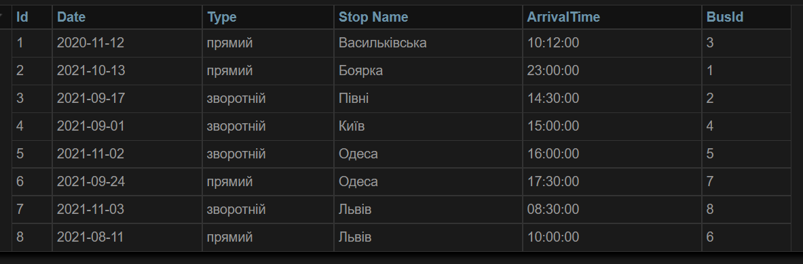 Створимо зв'язок між двома таблицями, для цього оберемо поле BusId та зв'яжемо його з Id другої таблиці, виділивши його та використавши функцію індекс Оберемо базу даних та поле іншої таблиці 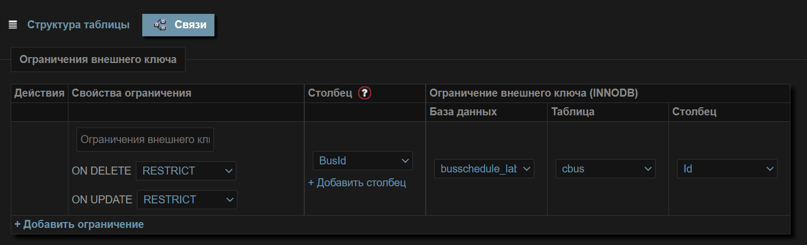 Зв'язок створено, перевірити це можна, навівши на поле BusId, який зв'язаний з Id з таблиці cSchedule 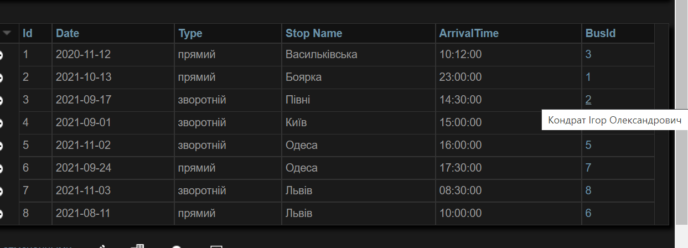 Виведення даних з БД та можливість додавати нову поїздку 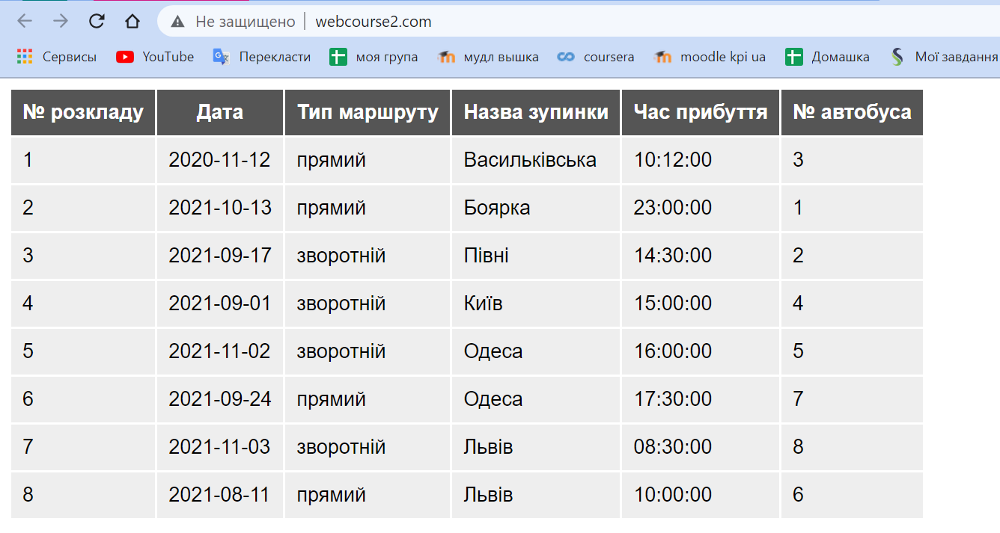 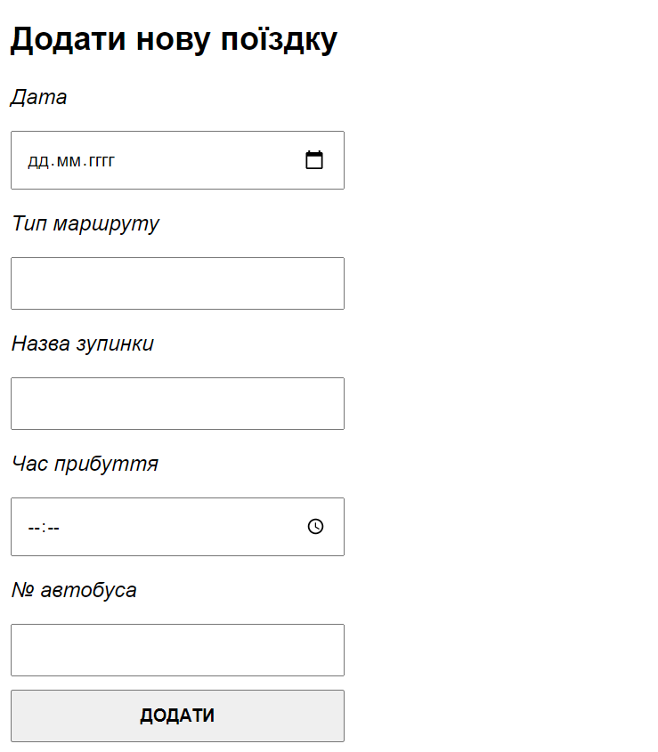 |